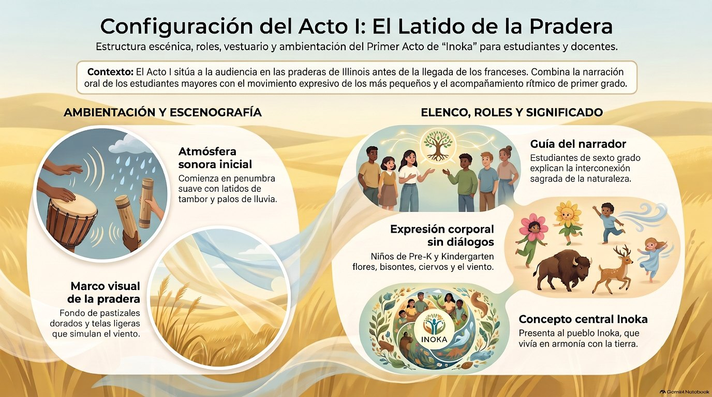

Respeto cultural: lo primero
Esta obra habla de un pueblo que sigue vivo. Los descendientes de los Inoka forman hoy la Peoria Tribe of Indians of Oklahoma, una nación reconocida por el gobierno de Estados Unidos. La obra los presenta con respeto, sin estereotipos de película.
Cinco reglas para todo el montaje
- Nadie se disfraza de indígena. Nada de plumas, tocados, flecos, collares de imitación ni pintura en la cara. Cada personaje se reconoce por lo que hace y por lo que lleva en las manos (ver vestuario).
- Los objetos sagrados no se fabrican ni se usan en escena. El calumet se nombra en el acto IV, pero no aparece. No se usan tambores de agua ni otros objetos ceremoniales.
- No se imitan cantos, gritos ni maneras de hablar. Los niños hablan con su voz de siempre. La música usa tambor de mano, palos de lluvia, sonajas y flauta, sin copiar cantos de ningún pueblo.
- Se habla en presente cuando toca. Los Inoka no «desaparecieron»: el acto V lo dice con claridad, y conviene repetirlo en clase.
- Los nombres, bien dichos. Inoka, Kaskaskia, Peoria, Tamaroa, Cahokia, Michigamea, miami-illinois. Ver la guía histórica.
En breve
- De qué trata: la pradera y los ríos de Illinois, las aldeas Inoka y su forma de vivir: el cultivo del maíz, el frijol y la calabaza, las casas de esteras, el comercio por los ríos y el consejo que decide por acuerdo. Termina en el presente, con la tribu Peoria de Oklahoma y su lengua, que vuelve.
- Duración: de 20 a 25 minutos, con las dos canciones.
- Elenco: toda la escuela. Cada acto es de dos grados; el acto V reúne a todos.
- Idiomas: el guion está en español y en inglés, con las mismas líneas. Las dos canciones se cantan en español.
La obra en imágenes

Reparto por grados y cantidades
Las cantidades son orientativas. Los papeles con texto propio pueden ser de un niño o de un grupo pequeño; los grupos sin texto crecen según la escuela.
| Grado | Papel | Mínimo | Recomendado | Máximo |
|---|---|---|---|---|
| Prekínder y kínder | La naturaleza: viento, flores, aves y bisontes (sin texto) | 8 | 20 | 40 |
| 1.º y 2.º | Niño Maíz, Niña Frijol, Niña Calabaza, Agricultora, Tejedora | 5 | 5 | 10 |
| Músicos: palos de lluvia y sonajas (acto I) | 2 | 4 | 8 | |
| Coro «Raíz con raíz» | 6 | 20 | todo el grado | |
| 3.º y 4.º | Mensajero, Navegante Peoria, Comerciante Kaskaskia, estudiantes de 3.º y 4.º del acto V | 5 | 5 | 10 |
| Los ríos (telas) y los remeros de las canoas, sin texto | 4 | 8 | 16 | |
| 5.º y 6.º | Narradores 1 y 2 | 2 | 2 | 4 |
| Guardiana de la Memoria, líderes del consejo Kaskaskia y Peoria, estudiantes de 5.º y 6.º del acto V | 5 | 5 | 10 | |
| Círculo del consejo (sin texto) y equipo técnico | 4 | 12 | 30 | |
| Todos | Estudiante de 1.º del acto V y el coro final | toda la escuela | ||
Trabajos para no actores
🎤 Presentadores
5.º o 6.º · 1 o 2Dan la bienvenida, presentan la obra y a su autor, y recuerdan que habla de un pueblo que sigue vivo.
🔊 Sonido
4.º a 6.º · 2Ponen las dos canciones en su momento, siguiendo la hoja de entradas.
💡 Luces
5.º y 6.º · 1 o 2Penumbra al empezar, luz cálida de día y luz dorada para el final.
🌾 Escenografía
Cualquier gradoPintan la pradera, preparan la casa de esteras y las canoas de cartón.
🧺 Utilería
3.º a 6.º · 2 a 4Canastos, tallos, esteras, remos, telas del río, pieles de fieltro, conchas y cuencos.
📖 Apuntador
5.º o 6.º · 1 o 2Siguen el guion entre bastidores.
🤝 Guías de bambalinas
5.º · 1 por cada 2 o 3 pequeñosAcompañan a prekínder y kínder en el acto I y en el final.
📰 Programa y cartel
3.º a 6.º · 2 a 4Completan el programa de mano y el cartel.
Música y canciones
Instrumentos: tambor de mano, palos de lluvia, sonajas de semillas y flauta. Pueden tocarlos los propios alumnos. No se usan grabaciones de cantos ceremoniales indígenas.
🎵 «Raíz con raíz»
Acto II · Coro de 1.º y 2.º grado, después de la Tejedora.
Letra
Raíz con raíz, hojita con hoja,
la tierra florece cuando el pueblo trabaja.
Maíz, calabaza y tierno frijol
protegen el hogar bajo el mismo sol.
🎵 «Legado de la pradera»
Canción final · Todo el elenco, después del coro «¡Somos la memoria de la pradera!».
Letra
Bajo el cielo abierto creció la hierba alta,
el bisonte, el viento y el agua que no falta.
Maíz, frijol, calabaza, juntitos bajo el sol:
la tierra da sus frutos cuando hay unión.
Estribillo:
Pradera dorada, río sin final,
la gente de Illinois vuelve a cantar.
Lo que fue sembrado no se perderá:
¡el aliento sigue, sigue y seguirá!
Por el río bajan canoas de un tronco,
llevan pieles, conchas y un saludo hondo.
En el consejo escuchan, palabra por palabra,
y así nace un acuerdo que a todos ampara.
(Estribillo)
Pasaron los años, el camino fue largo;
dejaron su tierra, pero no su legado.
Hoy en Oklahoma su nación sigue en pie,
y vuelve su lengua: los niños la aprenden también.
(Estribillo, dos veces)
¡Somos el presente y el legado de la gente de Illinois!
Las dos canciones se crearon para esta obra. Cada verso se canta dos veces, para que los más pequeños lo repitan.
Hoja de entradas (sonido y luces)
| N.º | Acto | Señal | Sonido | Luces |
|---|---|---|---|---|
| 1 | I | Se abre el telón | Tambor de mano, lento; palos de lluvia | Penumbra |
| 2 | I | Entra la naturaleza | Sigue el tambor | Sube poco a poco a luz de amanecer |
| 3 | I | Habla el Narrador 1 | El tambor baja hasta callar | Luz de día |
| 4 | II | Termina la Tejedora | «Raíz con raíz» | Luz cálida |
| 5 | III | Entran las canoas | Sonajas suaves, como agua | Luz azulada sobre el río |
| 6 | IV | Se forma el círculo del consejo | Silencio | Luz cálida en el centro |
| 7 | V | Todo el elenco da un paso al frente | — | Luz general |
| 8 | V | Termina el coro «¡Somos el presente…!» | «Legado de la pradera» | Luz dorada |
| 9 | V | Termina la canción | Tambores de mano | Reverencia; se cierra el telón |
Vestuario respetuoso
Los niños no se visten «de indígenas». Usan ropa sencilla y llevan la utilería de su personaje.
| Papel | Ropa de casa | Lo que lo distingue |
|---|---|---|
| Personajes humanos (agricultora, tejedora, navegante, comerciante, mensajero, consejo, narradores, estudiantes) | Camiseta o túnica lisa y pantalón en tonos tierra: beige, ocre, marrón, verde oliva. | La utilería: canasto, estera a medio tejer, remo, pieles de fieltro, conchas, cuencos de barro, bastón de cañas. |
| La naturaleza (prekínder y kínder) | Camiseta lisa: dorado para la hierba, azul claro para el viento, marrón para los bisontes, colores vivos para flores y aves. | Un distintivo sencillo de fieltro: una flor, un ala, unos cuernos pequeños. |
| Maíz, Frijol y Calabaza | Verde, verde claro y naranja. | Mazorca de fieltro, enredadera de papel, hojas grandes de fieltro. |
| Los ríos | Azul. | Las telas del río. |
Lista de cotejo
Salón: Docente: Papel del grupo:
| Nombre | Ropa de casa | Utilería o distintivo | Marcado con su nombre | Listo para el ensayo general |
|---|---|---|---|---|
Utilería y escenografía
- Fondo de la pradera pintado
- Casa larga de arcos con esteras
- Tallos de maíz, frijol y calabaza; canastos
- Dos telas azules de 6 a 8 metros
- Dos canoas de cartón con tirantes; remos
- Pieles de fieltro, conchas, cuencos de barro, bastón de cañas
- Fogón simbólico de papel o tela (sin fuego real)
- Tambores de mano, palos de lluvia, sonajas
- Las dos canciones probadas en el equipo de sonido
Escenografía y utilería
- La pradera (fondo fijo): papel kraft o lienzo con pastizales dorados altos, flores silvestres y cielo abierto.
- Los ríos: dos telas ligeras, azul rey y turquesa, de 6 a 8 metros, que los alumnos ondulan suavemente.
- Las canoas: siluetas de cartón reforzado, pintadas como madera tallada y quemada, con tirantes para llevarlas a la altura de la cintura. Las canoas de los Inoka se tallaban en un solo tronco.
- La casa larga: arcos flexibles (tubos de PVC o varas) cubiertos con esteras de petate, yute o caña. En verano, los Inoka vivían en casas largas para varias familias; en invierno, en wigwams más pequeños. Las dos se cubrían con esteras de junco.
- El fogón del consejo: simbólico, de papel o tela naranja. Nunca fuego real.
Plano del escenario
Visto desde el público.
Actos I y II
Público
Acto III
Público
Actos IV y V
Público
Ensayos
Semanas 1 a 3: cada grupo en su salón
- Prekínder y kínder (15 min): entrar con la música imitando el viento, los animales y las flores, y «congelarse» en semicírculo.
- 1.º y 2.º (20 min): sus líneas, «Raíz con raíz» y el movimiento de los tallos y las esteras; los músicos, el pulso del acto I.
- 3.º y 4.º (25 min): el movimiento de las telas y el paso de las canoas; las líneas del mensajero, el navegante y el comerciante.
- 5.º y 6.º (30 min): proyección de la voz, las pausas del consejo y la narración.
- Todos: «Legado de la pradera».
Semanas 4 y 5: por actos
Cada acto con su música y sus entradas y salidas por los lados. El acto V, con todos, al final de la semana 5.
Última semana
Dos o tres pasadas completas con utilería y canciones.
Carta a las familias
Lista para imprimir. Complete los espacios a mano.
Obra de teatro de la escuela: Inoka: El aliento de la pradera y la gente de Illinois
Fecha:
Estimada familia:
Este año, toda la escuela, de prekínder a 6.º grado, presentará Inoka, una obra sobre los pueblos que vivían en las praderas y los ríos de Illinois antes de la llegada de los franceses, y sobre sus descendientes de hoy, la tribu Peoria de Oklahoma. Mientras ensayan, los niños aprenderán historia de nuestro estado, ciencias (cómo crecen juntos el maíz, el frijol y la calabaza) y el valor de decidir escuchándonos unos a otros.
Su hijo o hija será:
Ropa que le pedimos, si la tiene en casa (no hace falta comprar nada):
Importante: por respeto a los pueblos indígenas, les pedimos que no envíen disfraces «de indio», plumas, tocados ni pintura para la cara. La escuela preparará la utilería de cada personaje.
- Entregar la ropa, en una bolsa con el nombre y el grado:
- Ensayo general:
- Función: día , hora , lugar
Cómo puede ayudar en casa: el guion está en Lumi (www.lumi-educa.com), en español y en inglés, con un botón para escuchar cada línea. Las dos canciones también están allí.
¡Gracias por acompañarnos!
Atentamente,
Devuelva este talón firmado antes del
Nombre del niño o la niña: Grado:
Doy permiso para que mi hijo o hija participe en la obra.
Doy permiso para que la escuela publique fotos o videos de la obra en los que aparezca mi hijo o hija.
No doy permiso para publicar fotos ni videos en los que aparezca mi hijo o hija.
Firma: Teléfono: